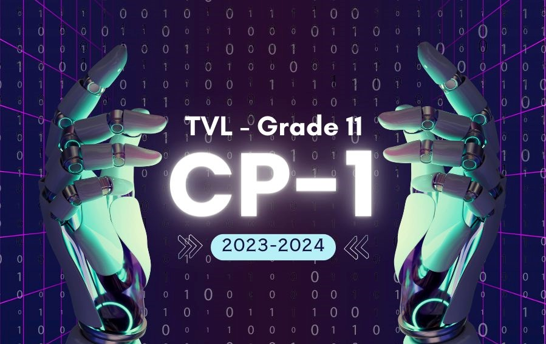

IntroductionByNene.com
Why I chose Tvl Computer programming

I chose Tvl Computer Programming because
I am planning to pursue the course I.t in college.
My Career has been planned meticulously and thoughtfully with the input of my family and myself.
I took to mind that my family is full of I.T and has I.T related careers, It would be in my best interest to choose it with having many people to guide me in this course.
Of course that does not mean I don't enjoy the strand, I am also interested in coding and anything related to technology so I am not forced, I always consider my own feelings before making a decision even though how selfish that sounds.
I hope that the teachers will help me with my prospects during my class here in LCUP, And in return, I will give my absolute effort to learn in every teacher's class.